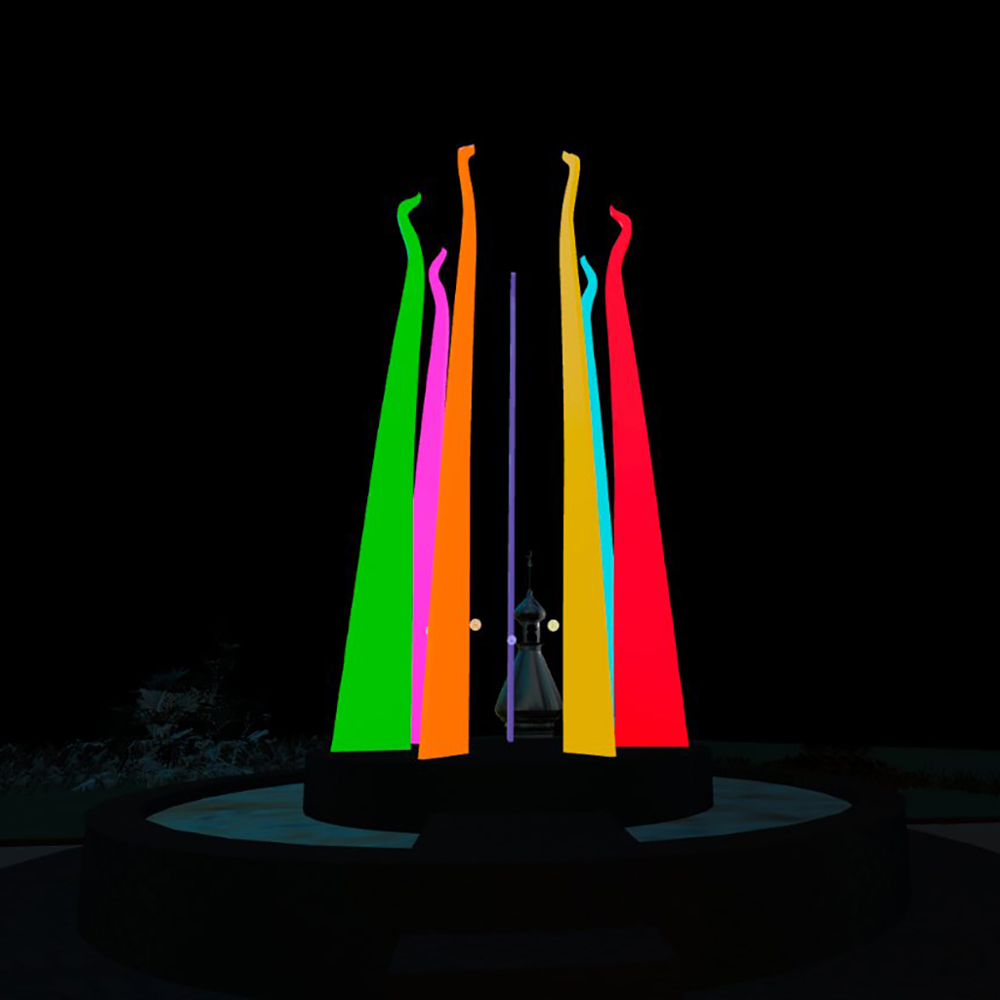

Sticks of Fire is a large, stainless steel sculpture in downtown Tampa. It's also a mythmaking machine, conjuring my hometown's tireless, optimistic quest to understand how it got its name. "Tan-pa" is believed to come from pre-Columbian Calusa or Timucuan languages. According to legend, Tan-pa means "sticks of fire," but we can't really know if that's true.
The sculpture serves as both an emblem of the city's mythmaking apparatus and as a navigational interface for this experience. Each of its seven steel pillars represents a themed vignette for the user to explore.
As a nod to Tampa's dubious claim of being the lightning capital of North America, the music accompanying each motif was dynamically generated using lightning data captured during local thunderstorms.
Sticks of Fire: Mythmaking Machine was developed in Unreal Engine 5.4 and optimized for Meta Quest headsets. The project is available to download as an .apk file on GitHub under the Creative Commons BY-NC-SA 4.0 license.
This site hosts a version of the original project built and optimized for WebXR. This version currently lacks some interactive features of the orignal Android package, notably navigation between scenes and dynamically generated music. Each scene is available via standard web links, and the music for each scene is taken from headset recordings from the original version. Users have the option of exploring each scene from the browser using WASD desktop controls or donning a VR headset for a fully immersive, 6DOF experience.